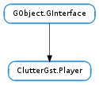

| Subclasses: | ClutterGst.VideoTexture |
|---|
| static | class_init(object_class) |
| deinit() | |
| get_audio_stream() | |
| get_audio_streams() | |
| get_buffering_mode() | |
| get_idle() | |
| get_in_seek() | |
| get_pipeline() | |
| get_seek_flags() | |
| get_subtitle_track() | |
| get_subtitle_tracks() | |
| get_user_agent() | |
| init() | |
| set_audio_stream(index_) | |
| set_buffering_mode(mode) | |
| set_seek_flags(flags) | |
| set_subtitle_track(index_) | |
| set_user_agent(user_agent) |
| Name | Type | Flags | Description |
|---|---|---|---|
| audio-stream | int | r/w | Index of the current audio stream |
| audio-streams | int | r | List of the audio streams of the media |
| idle | bool | r | Idle state of the player’s pipeline |
| in-seek | bool | r | If currently seeking |
| seek-flags | ClutterGst.SeekFlags | r/w | Flags to use when seeking |
| subtitle-track | int | r/w | Index of the current subtitles track |
| subtitle-tracks | int | r | List of the subtitles tracks of the media |
| user-agent | str | r/w | User Agent used with network protocols |
| Name | Parameters | Return | Description |
|---|---|---|---|
| download-buffering | float, float | The ::download-buffering signal is emitted each time their an update about the buffering of the current media. |
Bases: GObject.GInterface
ClutterGst.Player is an opaque structure whose members cannot be directly accessed
| Parameters: | object_class (GObject.ObjectClass) – a GObject.ObjectClass |
|---|
Adds the ClutterGst.Player properties to a class and surchages the set/get_property of GObject.ObjectClass. You should call this function at the end of the class_init method of the class implementing ClutterGst.Player.
Frees the resources created by ClutterGst.Player.init (). After ClutterGst.Player.deinit () has been called, no other player method can be called on the instance.
| Returns: | the index of the current audio stream, -1 if the media has no audio stream |
|---|---|
| Return type: | int |
Get the current audio stream. The number returned in the index of the audio stream playing in the list returned by ClutterGst.Player.get_audio_streams ().
| Returns: | a list of strings describing the available audio streams |
|---|---|
| Return type: | [str] |
Get the list of audio streams of the current media.
| Returns: | a ClutterGst.BufferingMode |
|---|---|
| Return type: | ClutterGst.BufferingMode |
| Returns: | True if the pipline is in idle mode, False otherwise. |
|---|---|
| Return type: | bool |
Get the idle state of the pipeline.
| Returns: | True if the player is seeking, False otherwise. |
|---|---|
| Return type: | bool |
Whether the player is seeking.
| Returns: | the Gst.Pipeline element used by the player |
|---|---|
| Return type: | Gst.Element |
Retrieves the Gst.Pipeline used by the player, for direct use with GStreamer API.
| Returns: | a combination of ClutterGst.SeekFlags |
|---|---|
| Return type: | ClutterGst.SeekFlags |
Get the current value of the seek-flags property.
| Returns: | the index of the current subtitlest track, -1 if the media has no subtitles track or if the subtitles have been turned off |
|---|---|
| Return type: | int |
Get the current subtitles track. The number returned is the index of the subtiles track in the list returned by ClutterGst.Player.get_subtitle_tracks ().
| Returns: | a list of strings describing the available subtitles tracks |
|---|---|
| Return type: | [str] |
Get the list of subtitles tracks of the current media.
| Returns: | the user agent used. The returned string has to be freed with GLib.free () |
|---|---|
| Return type: | str |
Retrieves the user agent used when streaming.
| Returns: | True if the initialization was successfull, False otherwise. |
|---|---|
| Return type: | bool |
Initialize a ClutterGst.Player instance. You should call this function at the beginning of the init method of the class implementing ClutterGst.Player.
When you’re finished with the ClutterGst.Player mixin features (usually in the dispose or finalize vfuncs), call ClutterGst.Player.deinit () to desallocate the resources created by ClutterGst.Player.init ().
| Parameters: | index_ (int) – the index of the audio stream |
|---|
Set the audio stream to play. index_ is the index of the stream in the list returned by ClutterGst.Player.get_audio_streams ().
| Parameters: | mode (ClutterGst.BufferingMode) – a ClutterGst.BufferingMode |
|---|
| Parameters: | flags (ClutterGst.SeekFlags) – a combination of ClutterGst.SeekFlags |
|---|
Seeking can be done with several trade-offs. Clutter-gst defaults to ClutterGst.SeekFlags.NONE.
| Parameters: | index_ (int) – the index of the subtitles track |
|---|
Set the subtitles track to play. index_ is the index of the stream in the list returned by ClutterGst.Player.get_subtitle_tracks ().
If index_ is -1, the subtitles are turned off.
| Parameters: | user_agent (str) – the user agent |
|---|
Sets the user agent to use when streaming.
When streaming content, you might want to set a custom user agent, eg. to promote your software, make it appear in statistics or because the server requires a special user agent you want to impersonate.